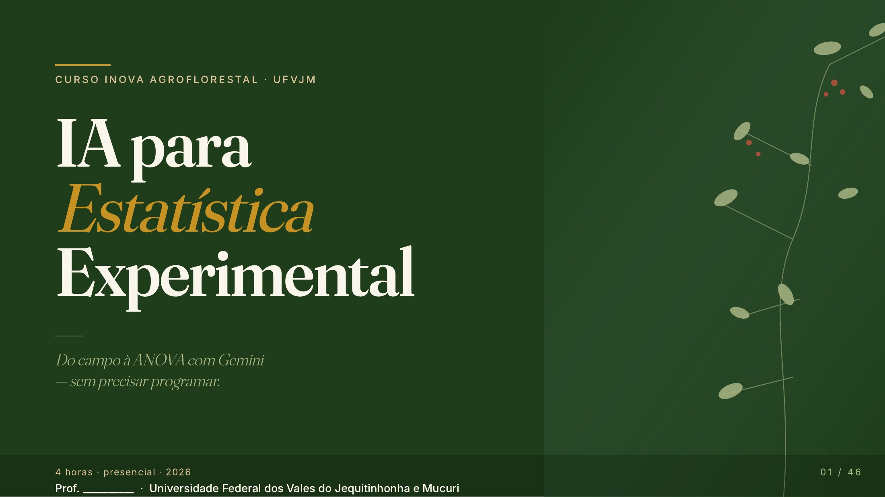

Do campo à ANOVA com Gemini, sem precisar programar. Slides, apostila, skills prontas e dados de exemplo.

46 slides no navegador. Use as setas do teclado, deslize no celular ou aperte F para tela cheia.
Passo a passo, prompts prontos, tabelas no padrão ABNT e gabarito dos exercícios.
Arquivos para criar seu Gem no Gemini (ou usar no ChatGPT e no Claude). Comece pelo gem-unico.md.
Seis experimentos fictícios (DIC, DBC, fatorial, parcela subdividida, doses, contagem) em CSV e XLSX.
O "código por trás" das análises, pronto para rodar no navegador.
Todos os arquivos, incluindo o PPTX editável dos slides.